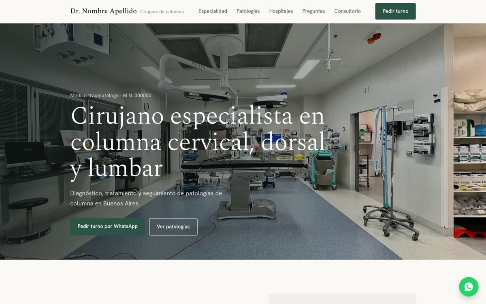
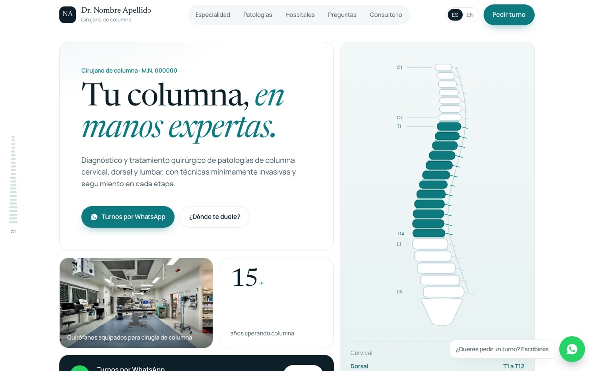

Dos propuestas de diseño para elegir. Las dos funcionan en celular y computadora, y se pueden recorrer y probar como si ya estuvieran publicadas.

Foto de portada, secciones en orden, tono sobrio.

Columna interactiva, español e inglés.
Textos, fotos y datos son de muestra hasta recibir el material definitivo.